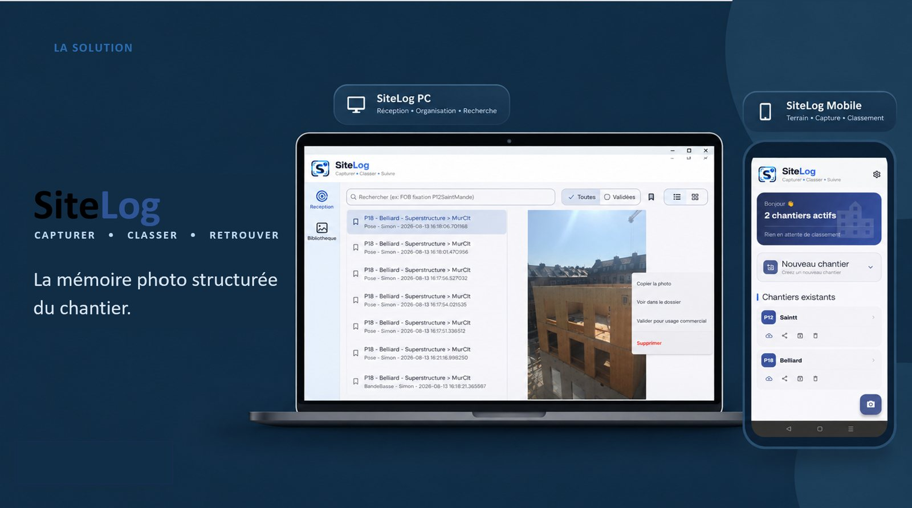
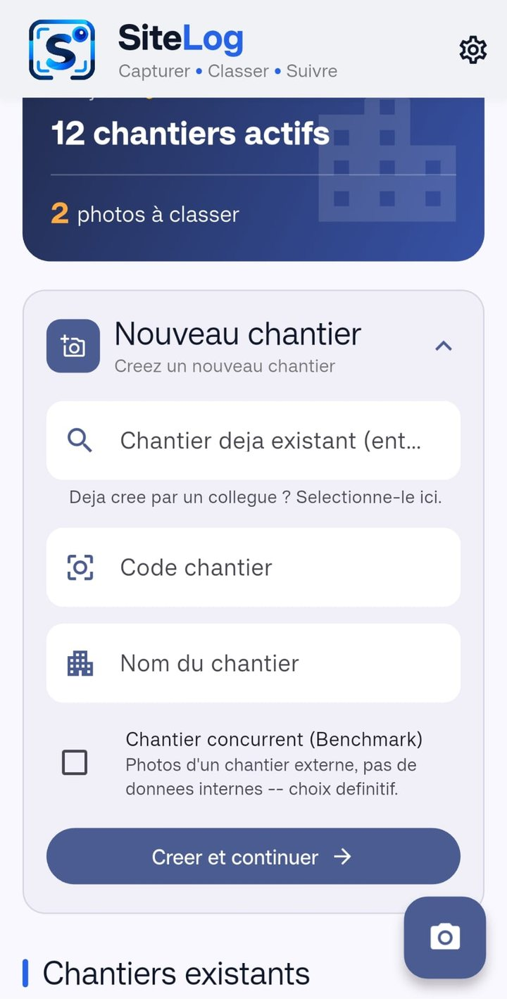
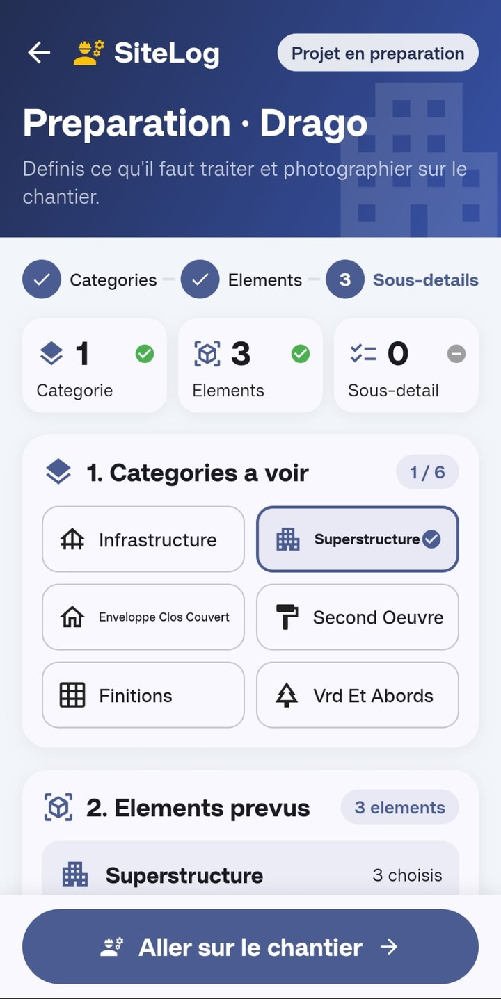
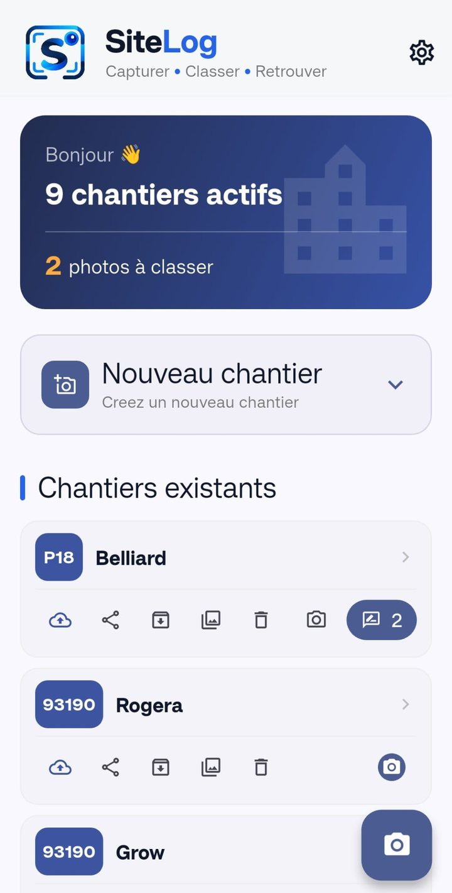
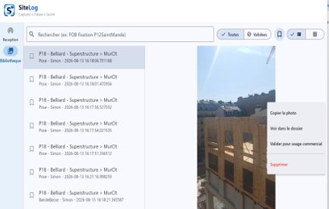
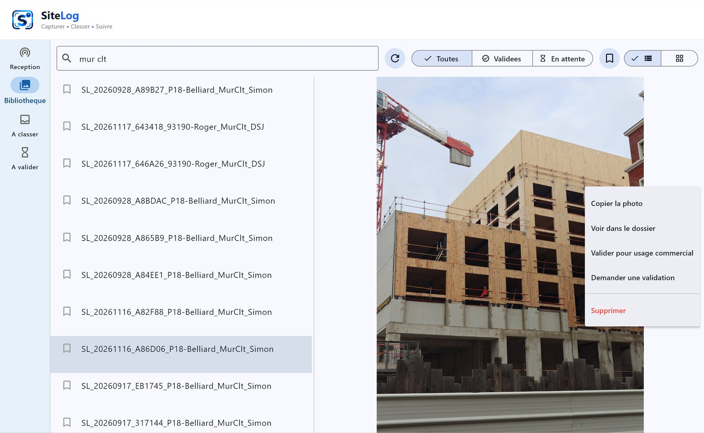

La mémoire photo de vos chantiers, enfin organisée.
SiteLog capture, classe et centralise les photos de vos chantiers pour en faire une mémoire technique durable, accessible et exploitable par vos équipes.
Chaque photo garde son contexte : chantier, ouvrage, élément, date, auteur.
Né sur nos propres chantiers, utilisé chaque jour par notre équipe.

Le constat
Sur un chantier, on prend des centaines de photos. Et après ?
Éparpillées
Téléphones, messageries, dossiers : les photos sont dispersées et personne n'a la vue d'ensemble.
Introuvables
Retrouver une photo précise devient une recherche interminable, qui n'aboutit pas toujours.
Sous-exploitées
Un savoir-faire photographié, mais rarement réutilisé dans les mémoires techniques et les réponses aux appels d'offres.
Comment ça marche
Rien ne change sur le terrain. Tout change au bureau.
Sur le chantier
Une photo, son chantier, son ouvrage.
Avant de commencer, on prépare le chantier : les catégories et les éléments à photographier. Sur place, chaque photo prise est associée à son chantier et à son ouvrage, sans formulaire à remplir.


Du terrain au bureau
Classées et centralisées.
Les photos sont envoyées vers le PC du bureau et rangées automatiquement par chantier, par date et par auteur. Tout le monde travaille sur la même bibliothèque.

Sur le PC
Un mot suffit.
Chantier, ouvrage, élément, auteur : tapez ce que vous cherchez, la photo apparaît avec tout son contexte.

Démonstration
Retrouvez aujourd'hui ce que vous avez construit hier.
Plusieurs mois après la pose, le bureau d'études a besoin de photos de murs CLT pour un nouveau mémoire technique. Il tape « mur clt » : SiteLog cherche dans tous les chantiers de l'équipe et affiche chaque photo avec son chantier, son ouvrage, sa date et son auteur.

Ce que chaque photo conserve
Chantieroù elle a été prise, parmi tous ceux de l'équipe
Ouvragela catégorie et l'élément
Datele jour de la prise de vue
Auteurqui l'a prise
Les meilleures photos peuvent être validées pour un usage commercial et retrouvées en un clic.
Ce que ça change
Vos photos deviennent un outil de travail.
Productivité
Moins de temps passé à chercher des photos dans les téléphones et les conversations.
Traçabilité
Chaque photo conserve son contexte : chantier, ouvrage, date et auteur.
Capitalisation
Les réalisations passées deviennent des références consultables pour vos mémoires techniques et vos offres.
Simplicité
Une application mobile pour le terrain, un outil PC pour le bureau. Une prise en main pensée pour le terrain. Android, iPhone et Windows.
Et si vos photos de chantier devenaient un véritable patrimoine technique ?
Échangeons pendant 20 minutes autour de vos méthodes actuelles et découvrons comment SiteLog pourrait s'intégrer à votre organisation.
Demander une démonstrationContact : sitelog@overie.fr